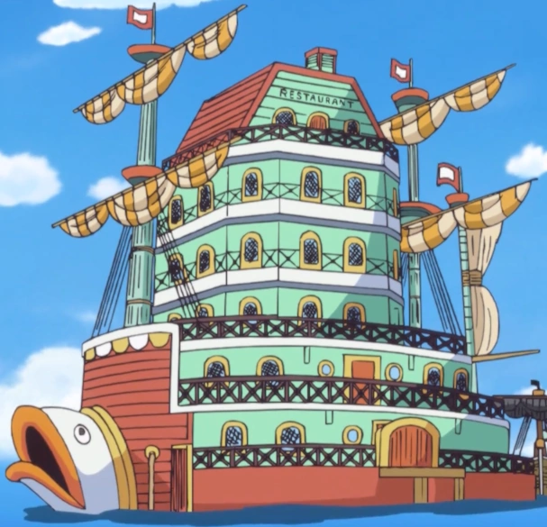
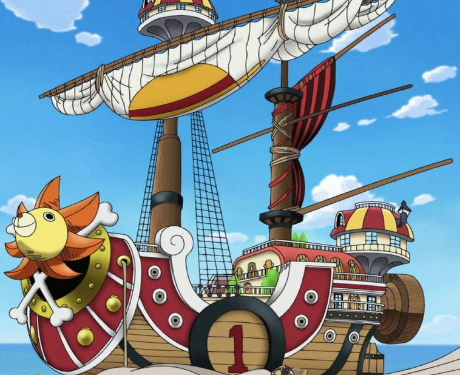

Mission: Zeff's wish is to leave no one hungry. After living a life of pirating, he almost died alongside Black Foot Sanji due to starvation. After being saved by wandering pirates, Zeff swore to never let anyone he sees go hungry again.
Mission: Monkey. D Luffy only had 1 goal in mind through his entire life, to beceome King of the Pirates! Throughout his journey, he has gone against the navy, the new world order, and even other pirates to show that we will be the one to get the One Piece!
